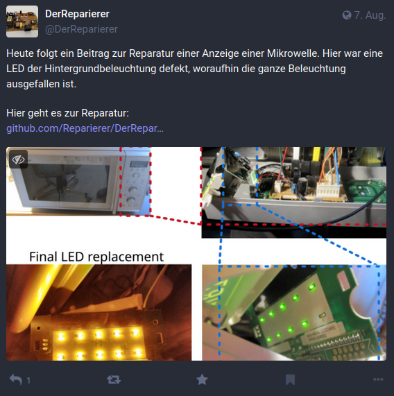

Welcome! All about repairing electronics.
Electrical devices are thrown away far too often, even though only a small thing is defective. In most cases, it is uneconomical to have the device professionally repaired. Nevertheless, many people are unwilling to throw away devices, most of which are not yet old. This repository is intended to collect repair tips that contribute to successful device repair.
DerReparierer on Mastodon
DerReparierer can also be found on Mastodon. Here you can find the latest repairs as well as information about upcoming events of Repair Cafes.

License
This work is licensed under CC BY-SA 4.0.